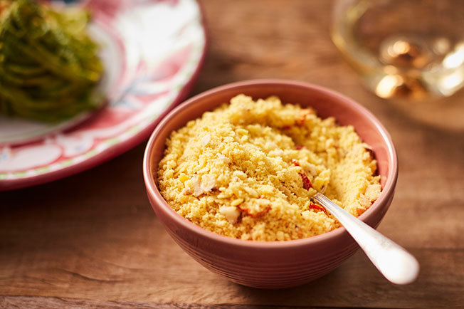

Back to Home Page
Farofa

A really nice Brazilian side dish that goes really well if Feijoada, Churrasco, or even your day-to-day rice and beans meal.
Ingredients
- 200 g of mandioca flour
- 60 ml of olive oil or 100g of butter
- 2 heads of garlic
- 1/2 of an onion
- Salt to taste
Steps
- Add the olive oil or butter to a pan on medium heat.
- Add the onions and shortly after, add the garlic.
- Add a pinch of salt.
- When the garlic and onion are golden, lower the heat and add the mandioca flour.
- Add salt.